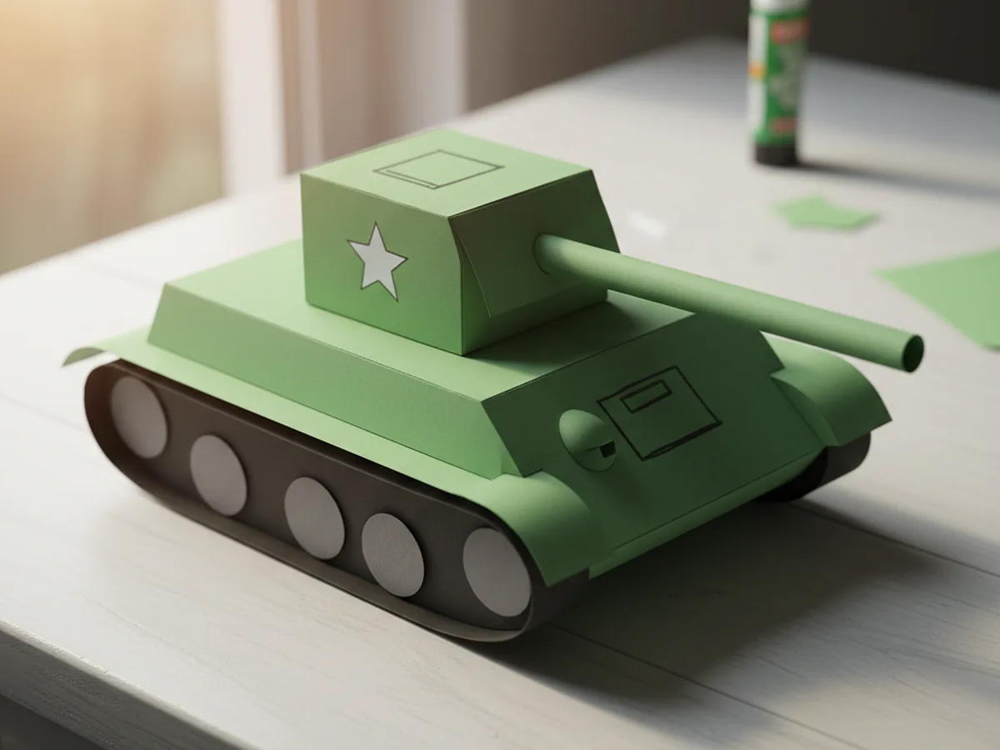
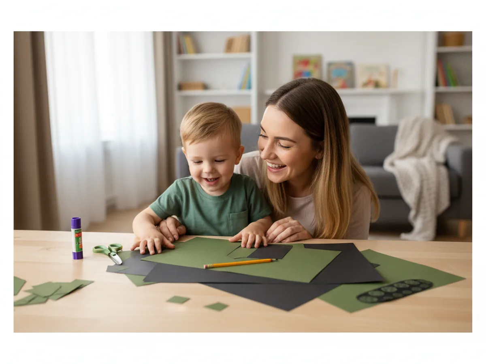
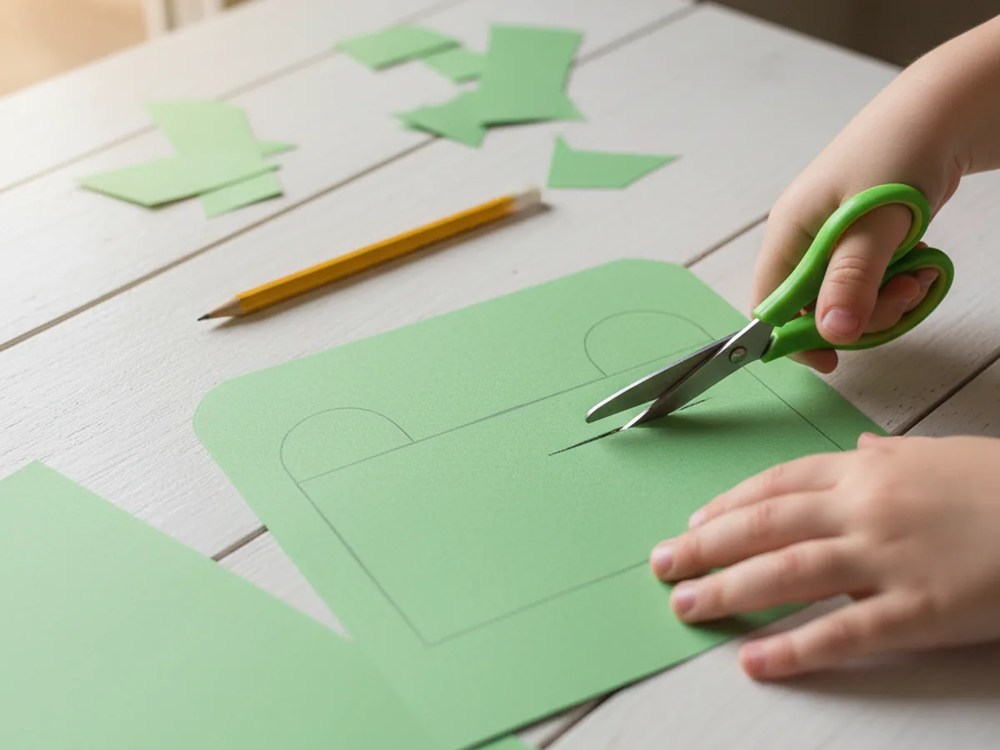
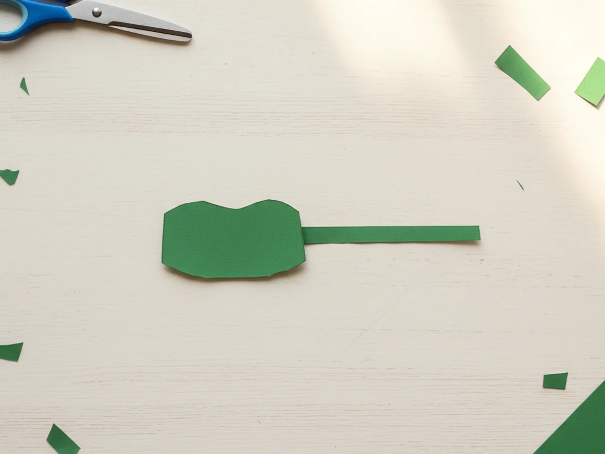
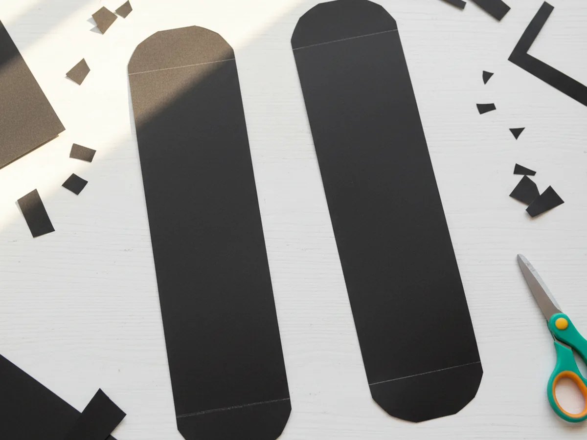
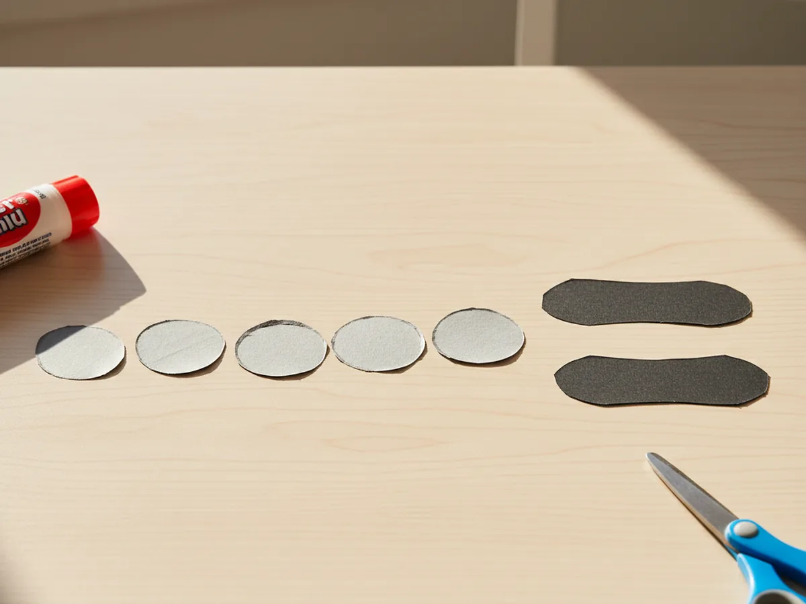
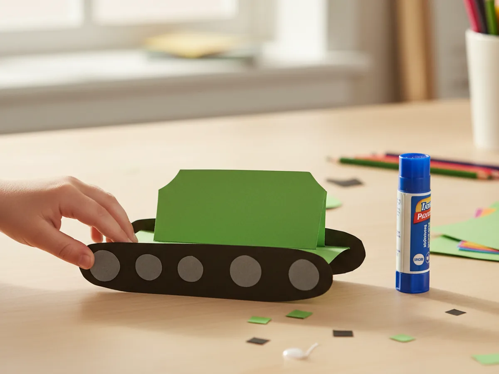
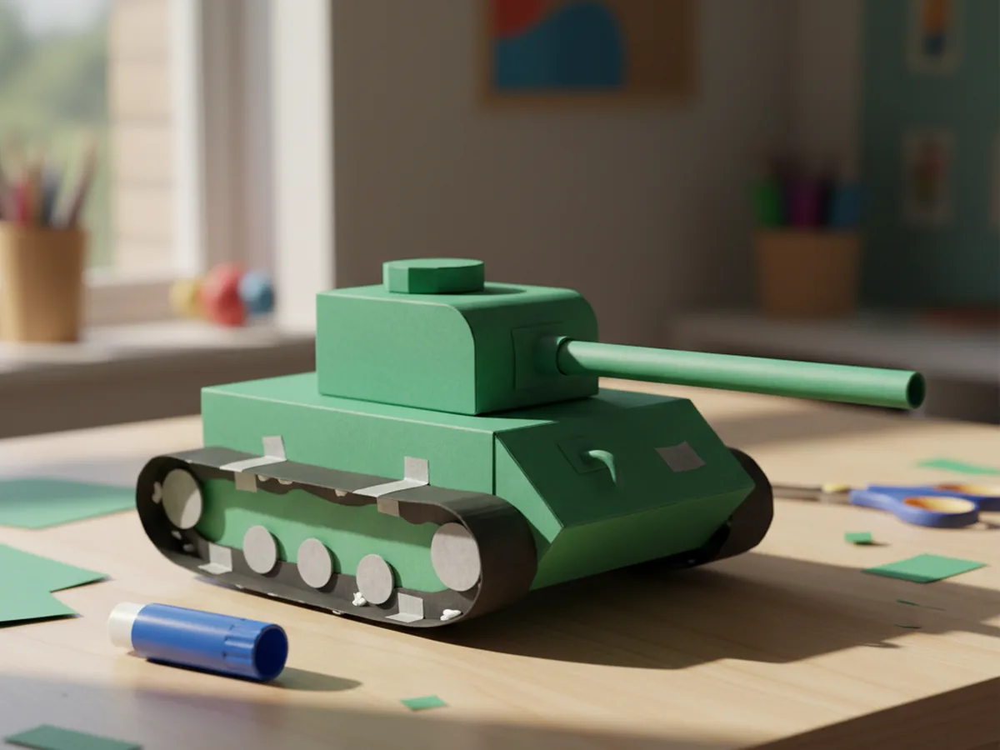
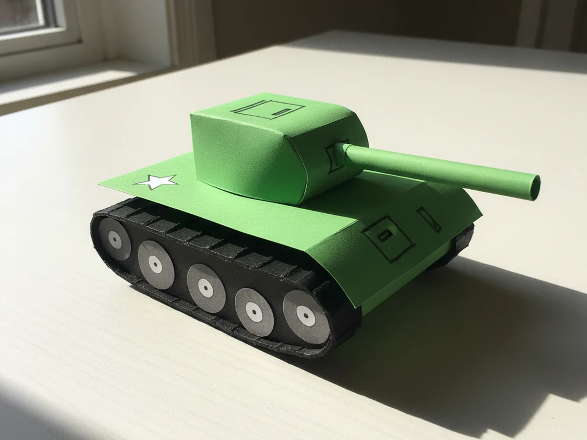

If your little one loves vehicles, trucks, or anything with wheels, this paper craft tank is going to be a guaranteed hit. It uses a few sheets of construction paper, takes about 30 minutes, and finishes with the kind of chunky, friendly little tank that kids want to push around the table over and over again. There is no painting and almost zero mess, just simple cutting and gluing. 🛠️
Toddlers can press down the glued shapes while bigger kids handle the cutting. The whole craft uses just green, black, and grey paper, so it stays beautifully simple from start to finish. Every finished version looks a little different, and that handmade wobble is exactly what makes this easy paper tank craft so charming.
Why Kids Love This Craft
For kids who already pretend with cars and trucks, getting to make their very own tank is pure excitement. The shape is bold, the wheels are satisfying to assemble, and the long barrel feels powerful in a fun, harmless way. Most children grab the finished tank right off the table and start narrating little adventures with it before the glue is even fully dry.
This project is also wonderful for little hands. Cutting straight rectangles and rounded shapes works on scissor control. Lining up the treads under the body teaches them how to place pieces with intention. Gluing all the wheels in a neat row gives a gentle dose of patience and order. It looks like simple play, but real fine motor practice is happening the whole time.
Best of all, this simple paper craft tank turns into a calm, screen-free afternoon together. You can talk about colors, count the wheels as you glue them, or invent silly missions for the finished tank. Those small side conversations during a craft are often the part children remember years later.

What You'll Need
Here is everything you need to make this paper craft tank at home. Lay everything out on the table before you start so the activity flows smoothly once your little one sits down.
- Crayola Construction Paper (240 sheets, assorted colors), you will mainly use green, black, grey, and white sheets for this craft.
- Astrobrights Bright Green Cardstock (320 sheets), optional but gives the tank body extra sturdiness if you want it to stand up.
- Fiskars Training Scissors for Kids, spring-action and blunt-tipped, perfect for the rectangular shapes and small wheel circles.
- Elmer's School Glue Sticks (30-pack), washable and easy for little hands to twist open and use.
- Crayola Broad Line Markers (10 classic colors), for adding the hatch, star, and small details at the end.
- A pencil, for lightly tracing the body, turret, and barrel before cutting.
- A small jar lid or bottle cap, helpful for tracing the round inner wheels evenly.
Step-by-Step Instructions
This paper craft tank step by step is genuinely easy to follow. Take it one piece at a time and let your child do as much of the cutting and gluing as they comfortably can.
Step 1: Cut the Tank Body
Start with a sheet of green construction paper. Use a pencil to lightly draw a wide rectangle about seven inches long and three inches tall, then round the top two corners gently so the body has a soft, friendly shape. Cut along the line carefully. This main piece becomes the body of the paper craft tank, the part that holds the turret and rests on the treads.
If your child is younger, pre-draw the rectangle so they only have to focus on cutting. Slightly wobbly edges are absolutely fine and give the tank that warm handmade look.

Step 2: Cut the Turret and Barrel
Now cut a smaller green rectangle for the turret, about three inches long and one and a half inches tall, with a gently curved top edge. Then cut a long thin green strip, about four inches long and roughly half an inch wide, for the gun barrel. Both pieces should match the color of the main body so the tank feels like one connected vehicle.
Most kids light up the moment they see the turret take shape. It is the first piece that makes the project really start to look like a real paper tank craft.

Step 3: Cut the Tank Treads
Take a sheet of black construction paper and cut two long, chunky rounded rectangles, roughly seven inches long and one and a half inches tall, with the corners curved smoothly. These will be the tank treads that sit underneath the green body. Keep them slightly longer than the body so they peek out a little on each side, which gives the tank that classic chunky tread look.
If freehand curves feel tricky for your child, you can place a small bowl at each end of the rectangle, trace around it, then cut along the line for perfectly rounded ends.

Step 4: Cut the Small Wheels
From grey or light black construction paper, cut four to six small circles, each about one inch wide. Tracing around a small jar lid, a glue stick cap, or a bottle cap makes this much easier for little hands. These little wheels sit right on top of the long black treads, giving the tank its busy, mechanical look.

Step 5: Glue the Treads and Wheels
Lay the green tank body flat on the table. Slide one long black tread under the bottom edge of the body so about a quarter inch peeks out below and on both sides. Glue it in place, then add the second tread directly behind the first, slightly offset for a layered look. Once both treads are secure, glue three small grey wheels in a row along the front tread, evenly spaced.
This is where the easy paper craft tank really starts to look like a real vehicle. The chunky tread base gives it weight and personality, even though the whole thing is just flat paper.

Step 6: Add the Turret and Barrel
Glue the small green turret rectangle right on top of the main body, centered nicely so there is even space on the left and right sides. Then take the long thin green strip and glue one end behind the front of the turret so it sticks straight out to the right, like the barrel pointing forward. A little overlap behind the turret will hold it firmly in place once the glue dries.
When you take a step back at this point, the paper craft tank already looks like a real little vehicle. Most kids gasp a little here, and that small moment of magic is exactly what this project is for. 💚

Step 7: Decorate and Finish
Time for the finishing touches. Cut a small white paper star, about an inch wide, and glue it onto the side of the body for that classic tank look. Use a black marker to draw a small square hatch on top of the turret, a thin line where the barrel meets the turret, and a few tiny dots on each grey wheel to look like bolts. Your child may also want to add their initials or a friendly number on the side. ⭐
Once the paper craft tank is fully finished, hold it up and let your child make the engine sound together. Most kids burst into giggles right then, and that little moment is usually the highlight of the whole craft.

Variations to Try
Camouflage Tank: Tear small irregular shapes from light green, dark green, and brown paper, then glue them all over the body and turret like a mosaic before adding the treads. This version is a wonderful sensory activity for younger toddlers who love tearing paper.
3D Standing Tank: Use cardstock instead of regular construction paper and fold a small base tab under the body so the tank stands upright on the table. This works beautifully if your child wants to display the finished tank on a shelf or playroom desk.
Toilet Paper Roll Tank: Wrap a clean toilet paper roll in green construction paper to make a chunky 3D body. Add a smaller green box or a square folded paper turret on top, and use a thin green straw or rolled paper for the barrel. This version turns the craft into a satisfying recycled project.
Final Thoughts
This paper craft tank tutorial is one of those projects that looks more impressive than it really is. It uses a handful of basic supplies, takes about half an hour, and leaves you with a sweet little keepsake your child will want to play with all afternoon. More than the finished result, though, it gives the two of you a quiet, joyful moment of making something together. 🎨
If your little one makes their own paper tank, I would love to see it. Pin this tutorial on Pinterest so other craft-loving mamas can find it easily. Happy crafting!
More Crafts You'll Love
If your little vehicle fan enjoyed this paper craft tank, they will adore these other easy paper vehicle crafts too: